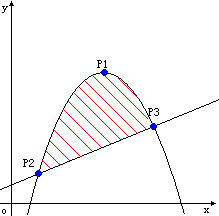

Ignatius bought a land last week, but he didn't know the area of the land because the land is enclosed by a parabola and a straight line. The picture below shows the area. Now given all the intersectant points shows in the picture, can you tell Ignatius the area of the land?
Note: The point P1 in the picture is the vertex of the parabola.
Hint:For float may be not accurate enough, please use double instead of float.
The input contains several test cases. The first line of the input is a single integer T which is the number of test cases. T test cases follow.
Each test case contains three intersectant points which shows in the picture, they are given in the order of P1, P2, P3. Each point is described by two floating-point numbers X and Y(0.0<=X,Y<=1000.0).
For each test case, you should output the area of the land, the result should be rounded to 2 decimal places.
2
5.000000 5.000000
0.000000 0.000000
10.000000 0.000000
10.000000 10.000000
1.000000 1.000000
14.000000 8.222222
33.33
40.69
#include<iostream> #include<iomanip> using namespace std;int main(){ cout<<setiosflags(ios::fixed)<<setprecision(2); int t; while(cin>>t){ for(int q=0;q < t;q++){ double x1,y1,x2,y2,x3,y3; cin>>x1>>y1>>x2>>y2>>x3>>y3; double a=y1*x2+x1*y3+y2*x3-x1*y2-x2*y3-y1*x3; double b=x1*x1*y2+y1*x3*x3+x2*x2*y3-y1*x2*x2-y2*x3*x3-x1*x1*y3; double c=x1*x1*x2*y3+x1*x3*x3*y2+x2*x2*x3*y1-x1*x2*x2*y3-x2*x3*x3*y1-x1*x1*x3*y2; double m=x1*x1*x2+x1*x3*x3+x2*x2*x3-x1*x2*x2-x2*x3*x3-x1*x1*x3; //克拉姆法则 double answer =0; answer+=2*a*(x2*x2*x2-x3*x3*x3); answer+=3*(b*(x2*x2-x3*x3)-m*(y2-y3)*(x2+x3)); answer+=6*((c-m*y2)*(x2-x3)+m*x2*(y2-y3)); answer/=6*m; if(answer<0)answer=-answer; cout<<answer<<endl; } }}